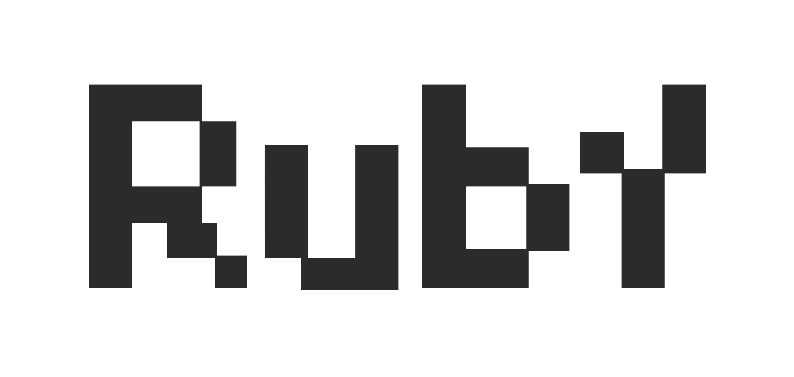
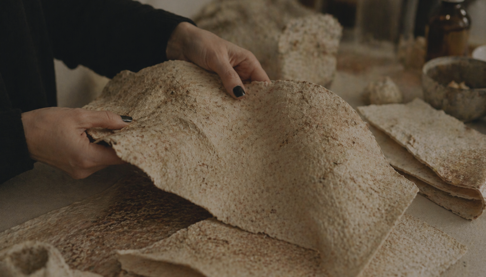
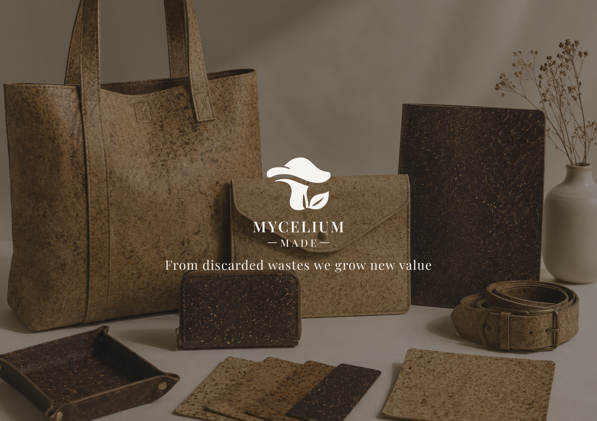
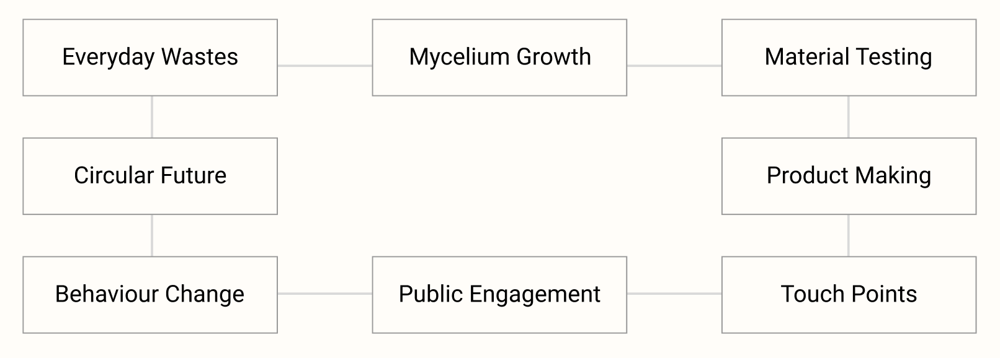
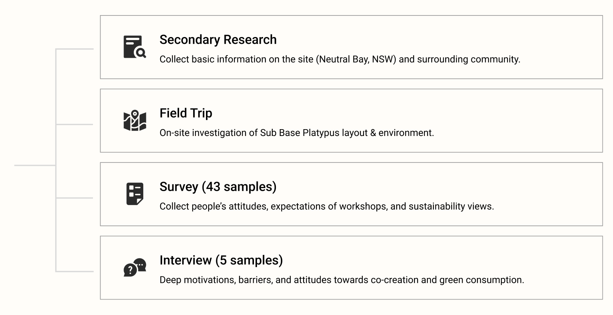
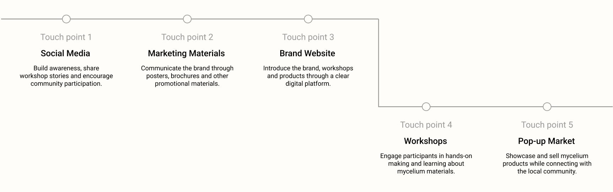
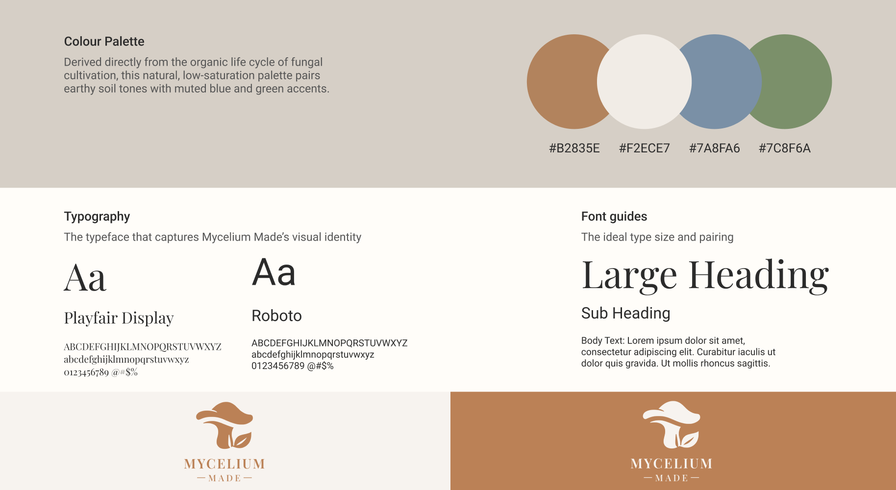

Strengths
- Good location & transportation.
- The unused space need activation.
- Many residential areas nearby with more residents come to the site for exercise in the morning.
- More younger, educated residents nearby.



This project explores how a mycelium-based workshop transforms everyday organic waste - such as coffee grounds and cardboard - into valuable bio-materials, promoting a circular economy.
Mycelium Made transforms organic waste into mycelium-based leather products through community workshops, promoting a more visible and participatory circular system.
12 Weeks
Figma, Adobe InDesign, Generative AI
User Research, Visual & UI Design
The circular system transforms everyday organic waste into mycelium products, then connects workshops, public engagement and behaviour change to create a continuous cycle of sustainable resource use.

Existing linear disposal systems leave valuable organic resources underutilized, contributing to environmental damage across land and water ecosystems. In Sydney, 93% of approximately 3,000 tonnes of annual coffee grounds end up in landfill (Planet Ark, 2016), while Australia landfills around 2.0 Mt of paper and cardboard waste each year (2022 - 23) (DCCEEW, 2025).
"How might we design a visible and participatory recovery system that empowers community residents to learn, engage, and drive circular resource flow?"
Research methods used to identify user needs


Testing evaluated whether users could understand the brand value, learn about mycelium leather, and navigate key service touchpoints.
Tested users' ability to understand the brand, book workshops, and browse products and events.
Evaluated the full journey from brand discovery and material understanding to decision-making and post-experience reflection.
Users need a step-by-step explanation of how the brand works.
Design response: Replace the paragraph with a workflow diagram.
Users need clear explanations of the durability and sustainability of mycelium.
Design response: Add detailed material information to the website.
Users need real evidence of the experience before attending a workshop.
Design response: Add real participant experiences to the website.
Users need a reason to return or to make a purchase.
Design response: More follow-up engagement pathway.
